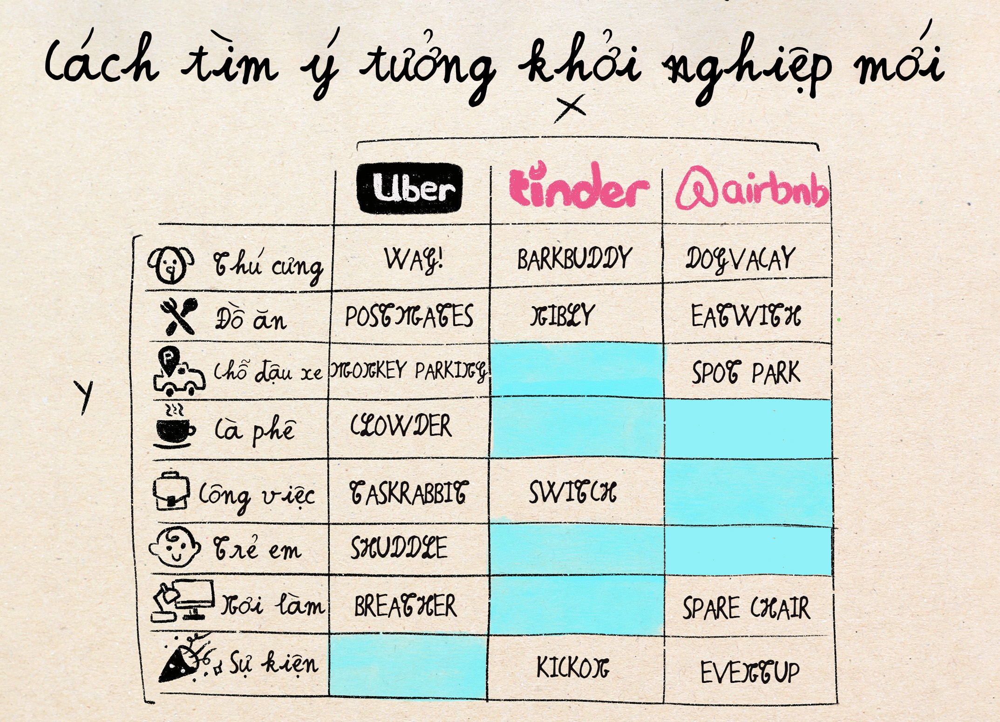
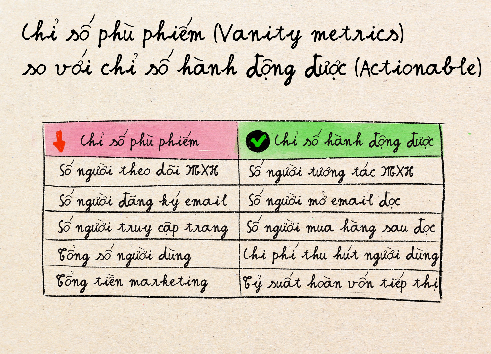
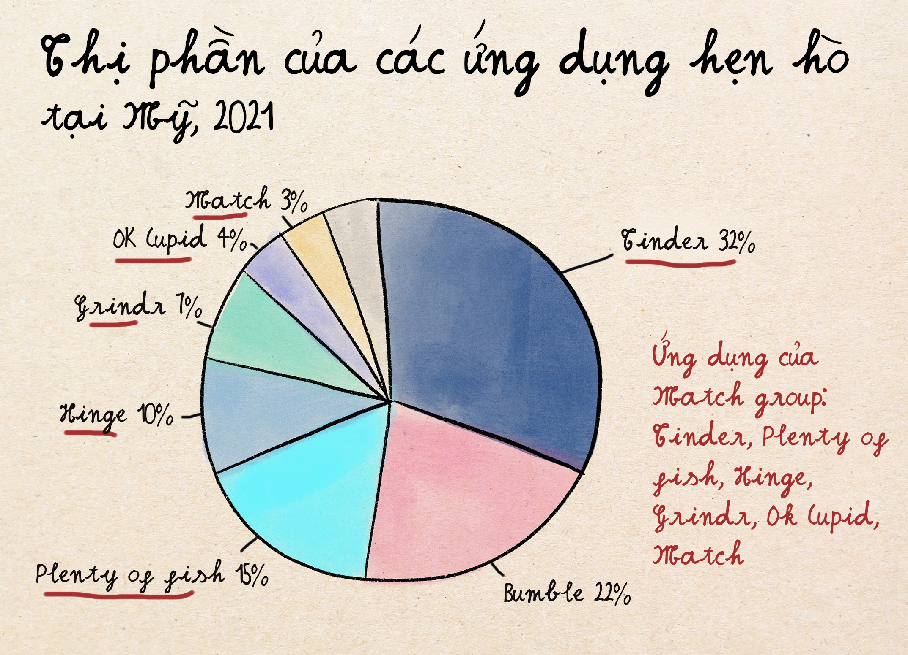

X cho Y – Cách giải thích khởi nghiệp được ưa chuộng trong ngành công nghệ
Trước khi đi vào phân tích các ứng dụng hẹn hò, chủ đề chính lần này, cho phép mình nói thêm tí về một chủ đề khá liên quan: Trong các bài pitch khởi nghiệp, rất nhiều founders sử dụng cụm từ "X cho Y". Một số ví dụ nổi tiếng:
- Uber nhưng cho chó = Công ty "WAG!"
- Airbnb nhưng cho chó = Công ty "Dogvacay"
- Birchbox nhưng cho thức ăn = Công ty "Blue Apron"
Việc sử dụng cụm từ này có một lợi thế lớn là giúp người nghe hiểu rõ ngay lập tức là sản phẩm của bạn làm gì, người dùng là ai, và có mô hình kinh doanh cơ bản thế nào. Tuy nhiên, để sử dụng cụm từ này thành công, những gì công ty X có mà bạn muốn làm theo phải rất rõ, dễ nhận biết, và mang chiều hướng tích cực trong mắt người nghe.
Ví dụ nhé:
"Uber nhưng cho chó" – cái mà bạn muốn bắt chước Uber không phải là những chi tiết nhỏ như cách họ vẽ bản đồ chỉ rõ đường đi và vị trí người lái xe, hay cách họ thay đổi giá tuỳ theo nhu cầu thị trường. Bạn đơn giản là muốn tạo ra ứng dụng giúp kết nối người cần trợ giúp dắt chó đi dạo và người muốn kiếm tiền từ việc dắt chó đi dạo. Và cách so sánh này tốt vì hầu hết các nhà đầu tư đều xem Uber là một công ty tiêu biểu thành công trong ngành công nghệ.
Nhưng có hai cách khác khá thú vị để sử dụng cụm từ này: Thứ nhất là dùng nó để giúp bạn động não "ý tưởng" mới cho sản phẩm mới. Cách làm như sau: vẽ ra một biểu đồ như bên dưới với X là các công ty với mô hình kinh doanh hay và thành công (như Uber, Tinder, Birchbox, Airbnb, v.v.) và chiều Y là các đối tượng người dùng bạn muốn tập trung vào thiết kế sản phẩm cho (như chó mèo, thức ăn, thế hệ genZ, v.v.), hoặc điểm đặc biệt nào đó khiến bạn khác với công ty X. Sau đó dùng Google để tìm ra xem đã có công ty nào làm sản phẩm phục vụ đối tượng tập trung Y với mô hình kinh doanh X chưa. Sau khi điền hết cái bảng này với tên những công ty đã có trên thị trường, bạn sẽ nhanh chóng nhận ra thị trường có lỗ hổng gì chưa có tay chơi để bạn có thể đào sâu hơn.
Hình bên dưới là một ví dụ. Bạn có thể mở rộng các công ty và các đối tượng Y theo ý muốn. Các vùng màu xanh là những vùng có cơ hội tạo ý tưởng mới.
Thứ 2, mình hay để ý xem công ty "X" nào thường được sử dụng nhiều nhất trong các bài pitch ý tưởng của các doanh nhân khởi nghiệp. Càng được nhắc tới nhiều, mô hình kinh doanh của X càng có khả năng phát triển tốt và dễ áp dụng rộng rãi. Bạn có thể tập trung thử xem có thể áp dụng những đặc điểm của X cho công ty của mình hay không.
Đây cũng chính là làn sóng diễn ra trong thế giới ứng dụng hẹn hò trong 5-10 năm gần đây, với rất rất nhiều các công ty nở rộ với cụm từ "Tinder, nhưng cho Y". Và vì có rất nhiều công ty mọc lên với slogan kiểu vậy, cùng mình vào phân tích sự khác biệt của họ nói riêng, và phân tích lĩnh vực "dịch vụ hẹn hò" nói chung nhé.
Tinder, nhưng …

Việc chọn biến số Y thích hợp có nhiều cấp độ khác nhau trong thị trường ứng dụng / dịch vụ hẹn hò:
Cấp độ 1: Như Tinder, nhưng "tốt hơn".
Đây là những công ty nhắm đến đối tượng người dùng giống Tinder, nhưng có những tính năng được quảng cáo là khác biệt và tuyệt vời hơn. Ví dụ:
- Ứng dụng Bumble = "Như Tinder, nhưng phụ nữ sẽ có cảm giác an toàn hơn"
- Hinge = "Như Tinder, nhưng cho những người muốn mối quan hệ lâu dài"
Yếu tố "Y" ở đây là những tính năng mới giúp giải quyết các vấn đề mà Tinder có. Thành công của các công ty này sẽ dựa vào nỗi đau mà họ đang giải quyết có thực sự lớn, đủ để người dùng quyết định chuyển sang ứng dụng khác thay vì dùng Tinder hay không.
Cấp độ 2: Như Tinder, nhưng cho "đối tượng nhân khẩu học khác".
Nhân khẩu học (Demography) là biến số nhắm đến các nhóm người dùng có chung đặc điểm rõ ràng về tuổi tác, giới tính, tôn giáo, v.v. Ví dụ:
- Lumen = Tinder cho người trên 50 tuổi
- Christian Mingle = Tinder cho những người theo thiên chúa giáo
- JSwipe = Tinder cho những người Do Thái
Thành công của các công ty này sẽ phụ thuộc vào việc nhóm đối tượng có đủ lớn và đủ khác biệt với đối tượng đại trà hay không.
Cấp độ 3: Như Tinder, nhưng có "lối sống / cách nhìn cuộc sống khác"
Bắt đầu từ cấp độ 3 trở đi là khu vực thú vị, nhưng cũng rủi ro cao hơn. Một số ví dụ trong cấp độ này:
- 420Singles = Tinder cho những người thích hút cần sa
- Veggly = Tinder cho những người ăn chay
- FarmersOnly = Tinder cho những người làm nông
Như cấp độ 2, thành công của các công ty này sẽ phụ thuộc vào việc nhóm đối tượng có đủ lớn và đủ khác biệt với đối tượng đại trà hay không. Ví dụ như nhóm những người ăn chay, có bao nhiêu người, và thực ra họ có quan tâm tới tìm người cũng ăn chay giống mình không, hay cuộc sống yêu đương của họ có thật sự bị ảnh hưởng nếu họ kết nối với người không ăn chay không? Nếu như nhóm người này ít hoặc không quan tâm lắm tới việc yêu đương người khác mình về lối sống ăn chay, thì sản phẩm phục vụ nhu cầu này sẽ không có chỗ đứng.
Cấp độ 4: Như Tinder, nhưng có "một đặc điểm gì đó rất khác thường"
Đây mới là cấp độ lạ lùng nhất, khi biến số Y trở nên cực kỳ lạ cho những người dùng đại trà. Ví dụ:
- Bristlr = Tinder cho những người thích râu ria trên mặt
- Gluten-Free Singles = Tinder cho những người không ăn Gluten
- Trek Passions = Tinder cho những người biết tiếng Klingon (là ngôn ngữ hư cấu dùng trong phim Star Trek)
Thông thường công ty nào chui vào cấp độ này thì chết rất dễ vì số lượng người dùng quá ít.
Đi từ cấp độ 1 tới cấp độ 4 thì càng đi xuống cấp độ lớn hơn, số lượng người dùng càng nhỏ đi. Nếu bạn tranh đua với cấp độ 1 thì dễ thất bại, vì hoạt động trong cấp độ 1 toàn là những công ty đã lớn và có nhiều người dùng rồi. Là một khởi nghiệp mới lên, thông thường hoạt động ở cấp độ 2 hoặc giai đoạn đầu của cấp độ 3 là khu vực dễ thở hơn.
Ngoài độ lớn của đối tượng người dùng mục tiêu, các tiêu chí cần thiết khác để các công ty ở cấp độ 2 và 3 hoạt động tốt hơn bao gồm:
- Tập trung địa lý: Đây là nơi hầu hết doanh nghiệp hiểu sai về cách hiệu ứng mạng lưới hoạt động. Khác với các ứng dụng mạng xã hội như Facebook, Instagram, hiệu ứng mạng lưới cho các ứng dụng hẹn hò cần mang tính địa phương, có nghĩa là ứng dụng của bạn không cần hàng triệu người dùng toàn cầu - nó cần hàng trăm người dùng tích cực ở mỗi thành phố. Nếu bạn là người leo núi ở Austin, Texas, việc có những người leo núi ở Seattle không quan trọng. Bạn không thể leo núi cùng những người này trong một cuộc hẹn hò được.
- Khác biệt văn hóa đủ để các giải pháp đã có trên thị trường chưa đủ để đáp ứng nhu cầu. Nếu sự khác biệt không quá lớn thì người dùng mục tiêu của bạn không có lý do gì để thay đổi ứng dụng họ đang dùng.
- Khả thi kinh tế: người dùng sẵn sàng bỏ tiền để trả cho dịch vụ phù hợp với lối sống của họ.
Ta lấy ví dụ nhé.
Christian Mingle thành công vì:
- Nhóm đối tượng lớn: ~230 triệu người theo đạo thiên chúa. Ngay cả khi tính số lượng người dùng trong một địa phương nhỏ vẫn có rất nhiều vì đạo này khá phổ biến ở Mỹ.
- Sở thích văn hóa rất khác biệt. Các đối tượng này thường có bố mẹ muốn con cái hẹn hò với người cùng đạo.
JSwipe hoạt động tốt vì:
- Nhóm đối tượng đáng kể với sự tập trung cao ở các thành phố lớn (thị trường chủ chốt của JSwipe)
- Sở thích văn hóa rất khác biệt. Các đối tượng này thường có bố mẹ muốn con cái hẹn hò với người cùng đạo.
- Nhóm đối tượng thu nhập cao sẵn sàng trả tiền cho các tính năng cao cấp
FarmersOnly tìm thấy thành công vì:
- Giải quyết một vấn đề nan giải về địa lý: hẹn hò ở khu vực nông thôn thực sự khó
- Cạnh tranh thấp ở thị trường nông thôn
- Đối tượng người dùng có khác biệt văn hóa lớn với người dùng trên thành phố. Sự khác biệt này không được khai thác bởi các ứng dụng hẹn hò chính.
Bristlr thất bại vì:
- Mặc dù tính trên toàn nước Mỹ, có thể có nhiều chị em thích râu ria trên mặt. Nhưng ở bất kỳ thành phố đáng kể nào thì không có đủ lượng chị em này để tạo ra một thị trường hẹ hò riêng.
Việc phân tích các cấp độ biến số Y như thế này có thể được áp dụng ở các ngành khác mà không chỉ trong ngành ứng dụng hẹn hò.
Các chiến lược độc để sống sót trong ngành ứng dụng hẹn hò
Mặc dù ở phần bên trên ta có nói tới các yếu tố cần thiết để các công ty "Tinder nhưng …" tồn tại và kiếm đủ doanh thu, điều đó không có nghĩa là không có cách để vượt qua các trở ngại đó. Bên dưới, mình muốn đưa ra một số công ty đã sử dụng các chiến lược đáng học hỏi để giữ vững doanh thu mà không bị chết ngoải vì ít người dùng.
Chiến Lược 1: Ít khách hàng, thì tính phí cao hơn. Ứng dụng hẹn hò The League chẳng hạn dành cho những người có doanh thu cao muốn hẹn họ những người thành công khác. Vì thế họ tính phí $199/tháng vì tuy số lượng người dùng khá nhỏ, những đối tượng này không ngại bỏ ra $199/tháng.
Chiến Lược 2: Chiến thuật mở rộng nền tảng (bắt đầu hẹp, sau đó mở rộng đối tượng mục tiêu). Không phải là ứng dụng hẹn hò nhưng công ty Strava là một ví dụ trong lĩnh vực tương tự. Strava là nền tảng theo dõi sức khỏe và mạng xã hội hàng đầu cho những người thích đi xe đạp, nhưng nhanh chóng trở thành mạng xã hội cho bất kỳ ai tập quan tâm về sức khoẻ, thích tập thể dục thể thao và muốn khoe khoang những thành tích của họ. Họ tập trung vào một cộng đồng nhỏ trước, sau đó mở rộng khi đã sở hữu cộng đồng ban đầu.
Chiến Lược 3: Chuyển hướng B2B (nhắm vào doanh nghiệp thay vì người tiêu dùng). Một số ý tưởng ứng dụng kết nối và hẹn hò có thể không hấp dẫn đủ để người dùng trả tiền, nhưng đủ hấp dẫn cho các công ty mua để nhân viên họ dùng. Ví dụ như ứng dụng kết nối các bác sỹ với nhau thì các bác sỹ chưa chắc muốn trả tiền. Nhưng các bệnh viện thì có thể sẽ quan tâm tới dịch vụ giúp nhân viên / bác sỹ / y tá của họ kết nối chuyên nghiệp với nhau, và có thể sẽ sẵn sàng trả tiền cho các dịch vụ đó. Đây là sự khác biệt giữa người mua (buyers) và người dùng (users). Một số công ty trong dạng này bao gồm b2match và Brella. Cả hai dịch vụ này nhắm vào việc thúc đẩy kết nối dễ dàng cho những người tham dự sự kiện và hội nghị - nhưng người trả tiền sản phẩm là các công ty tổ chức hoặc tham gia sự kiện.
Bài toán Chỉ số thành công (Success Metrics) - Nghệ thuật đo lường thành công cho các ứng dụng hẹn hò
Một đặc điểm khác thường cho các ứng dụng hẹn hò là chỉ số thành công thường được dùng trong các ngành khác lại không áp dụng được. Một số chỉ số điển hình mà cho các công ty khác, thường càng cao thì càng tốt:
- "Người dùng tích cực hàng tháng" (monthly active user)
- "Thời gian dùng ứng dụng" (App usage time)
- "Tỷ lệ người dùng tiếp tục dùng" (Retention rate)
Nhưng cho các ứng dụng hẹn hò thì lại khác:
- Càng nhiều người dùng tích cực hàng tháng có thể đồng nghĩa với việc càng nhiều người độc thân vẫn chưa kiếm được người hẹn hò.
- Thời gian dành trong ứng dụng càng cao thì có nghĩa là người dùng nghiện dùng và lướt profile nhưng không có nhiều thành công kết nối
- Tỷ lệ giữ chân người dùng cao có nghĩa là ứng dụng của bạn không thành công trong việc kết nối và giúp người dùng hẹn hò
Tối ưu hoá những chỉ số này cho ứng dụng hẹn hò cũng giống như tối ưu hóa bệnh viện bằng cách giữ bệnh nhân ốm lâu hơn (nhiều người dùng hơn, tỷ lệ giữ chân người dùng cao hơn). Ta gọi những chỉ số này là "Vanity Matrics", tạm dịch là các chỉ số phù phiếm không phản ánh giá trị thực sự của một sản phẩm. Để phát triển chiến lược đúng đắn, ta cần đo lường những gì thực sự tạo ra giá trị dài hạn. Với các ứng dụng hẹn hò, một số các chỉ số có ý nghĩa hơn bao gồm:
- Tỷ lệ phản hồi tin nhắn
- Tỷ lệ thành công kết nối hẹn hò
- Tỷ lệ hình thành mối quan hệ dài hạn
Ứng dụng hẹn họ Hinge không những chạy theo những chỉ số này mà còn quảng bá nó rộng rãi. Họ tự gọi bản thân là ứng dụng "được thiết kế để xóa đi," nhằm nhấn mạnh tỷ lệ thành công cao trong việc tìm cho bạn nửa kia đến mức bạn sẽ không cần dùng nó nữa.
Một ví dụ khác ngoài mảng ứng dụng hẹn hò là Duolingo. Ứng dụng học ngoại ngữ cực kỳ phổ biến này không đo lường thành công bằng số lượng bài học học viên hoàn thành, mà lại quan tâm hơn vào chỉ số "duy trì chuỗi ngày học liên tục" (tiếng anh là streak maintenance). Họ hiểu rằng một học viên vào ứng dụng học mỗi ngày trong vòng 10 ngày liên tiếp có giá trị hơn rất nhiều so với học viên vào ứng dụng 10 lần trong 1 năm. Đây là chỉ số đo lường tính nhất quán của học viên và là biểu hiện của việc bài học có hiệu quả.
Các chiến lược độc để sống sót trong ngành ứng dụng hẹn hò (tiếp)
Khi chỉ số quan trọng của công ty là tỷ lệ thành công kết nối hẹn hò, bạn có thể tự hỏi: làm thế nào để xây dựng một doanh nghiệp bền vững khi kết quả lý tưởng của bạn là khách hàng tìm được bạn đời và xoá, không dùng app nữa? Mình muốn nêu thêm 2 chiến lược hay một số ứng dụng hẹn hò sử dụng để vượt qua cái khó này.
Chiến Lược 4: Sở hữu toàn bộ hệ sinh thái hẹn hò. Bạn có biết là Tinder, Hinge, OkCupid, PlentyOfFish, và nhiều ứng dụng hẹn hò khác nhau thực ra là được sở hữu bởi một công ty mẹ lớn tên là Match Group? Có nghĩa là nếu một người dùng rời Tinder vì họ muốn tìm mối quan hệ nghiêm túc trên ứng dụng Hinge, người dùng đó vẫn đang trong hệ sinh thái của Match Group. Chiến lược này giống như các công ty lớn CocaCola, Pepsi, v.v. sở hữu phần lớn các loại đồ ăn vặt và thức uống trên thị trường nên khách hàng thích ăn uống thể loại gì thì họ vẫn có doanh thu đi vào. Nó đòi hỏi công ty mẹ phải biết cách điều hành nhiều thương hiệu cùng một lúc để đáp ứng nhiều nhu cầu khách hàng khác nhau.
Chiến Lược 5: Giữ chân khách hàng sau khi họ đã bắt đầu hẹn hò bằng cách tạo ra hệ sinh thái với nhiều dịch vụ khác. Thay vì chấp nhận rằng khách hàng rời ứng dụng sau khi tìm được người hẹn hò thành công, một số ứng dụng giữ chân người dùng bằng các dịch vụ như AI tư vấn cách hẹn hò và giữ chân người yêu (vd: ứng dụng Grindr với tính năng AI Wingman), diễn đàn thảo luận các thách thức trong quan hệ yêu đương và hôn nhân (vd: ứng dụng Muzz), v.v. Chiến lược này tạo ra một hệ sinh thái cho người dùng, và đòi hỏi các công ty này phải có kỹ năng xây dựng cộng đồng tốt và sự kiên nhẫn để xây dựng mối quan hệ lâu dài với người dùng.
Mặc dù các chiến lược mình nêu ra bên trên là cho ứng dụng hẹn hò, nó vẫn có thể áp dụng được vào những ngành khác có đặc điểm tương tự như các ứng dụng sức khoẻ (người dùng có thể không dùng ứng dụng nữa khi họ đã đạt được mục tiêu sức khoẻ đã đề ra), các ứng dụng dạy học (người dùng không dùng nữa khi đã vượt qua một kỳ thi với số điểm cần đạt), v.v. Bài học quan trọng ở đây là, một khi bạn nhận ra được chỉ số có ý nghĩa cho công ty (không phải chỉ số phù phiếm), bạn sẽ thường khám phá ra rằng chiến lược mô hình kinh doanh cũng phải thay đổi để có thể tối ưu hoá chỉ số thành công một cách tốt hơn.
Lời kết
Trong thế giới tràn đầy các công ty "X, nhưng cho Y" đuổi theo các chỉ số phù phiếm và xây dựng sản phẩm cho thị trường không đủ rộng để có lợi nhuận tốt, lợi thế cạnh tranh lớn nhất là khả năng tìm được chiến lược có thể tối ưu hoá chỉ số quan trọng cho doanh nghiệp, và biết cách tính toán đúng các chỉ số này để thay đổi chiến lược kinh doanh một cách nhanh chóng.